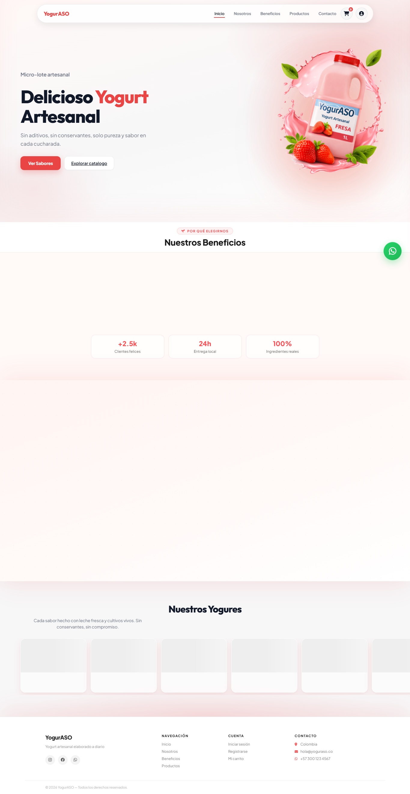
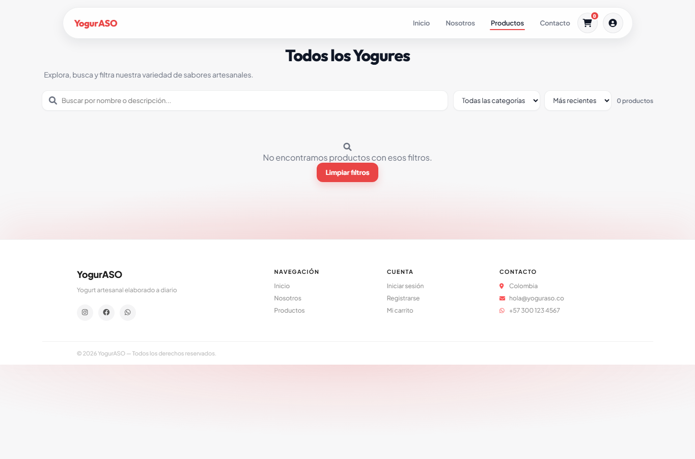
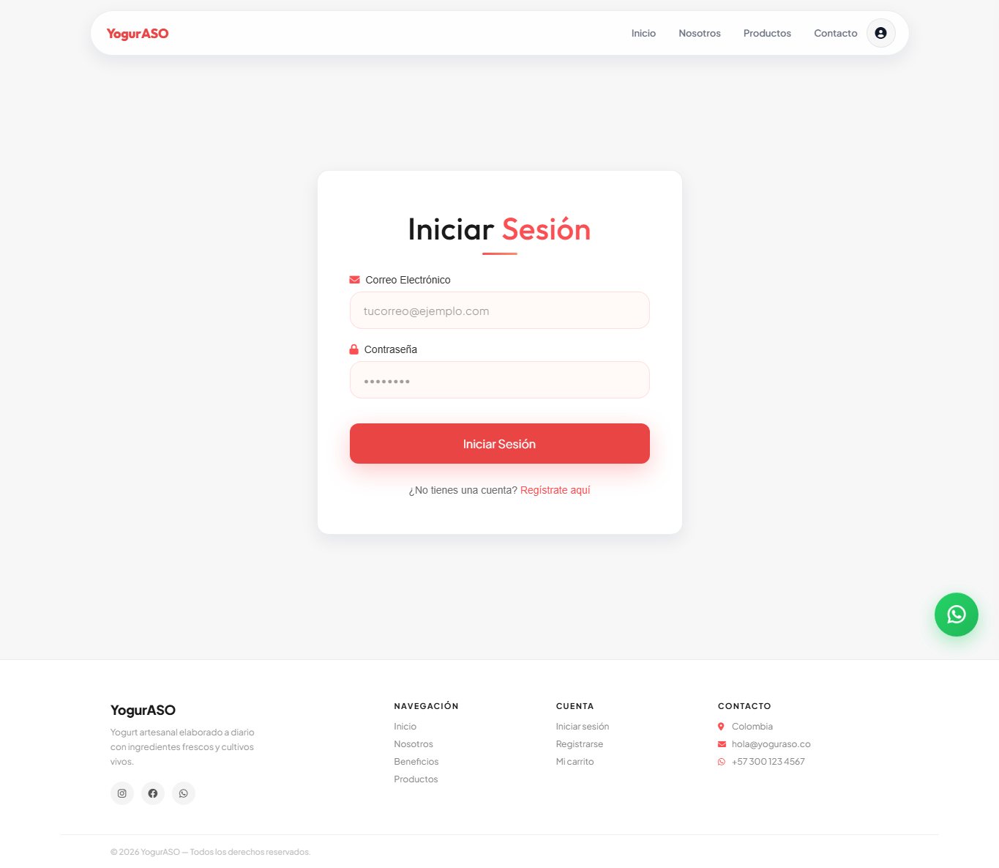
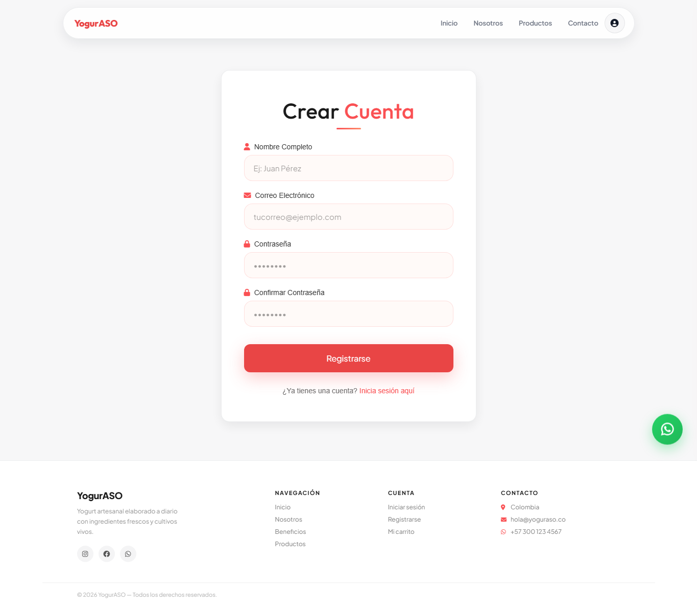
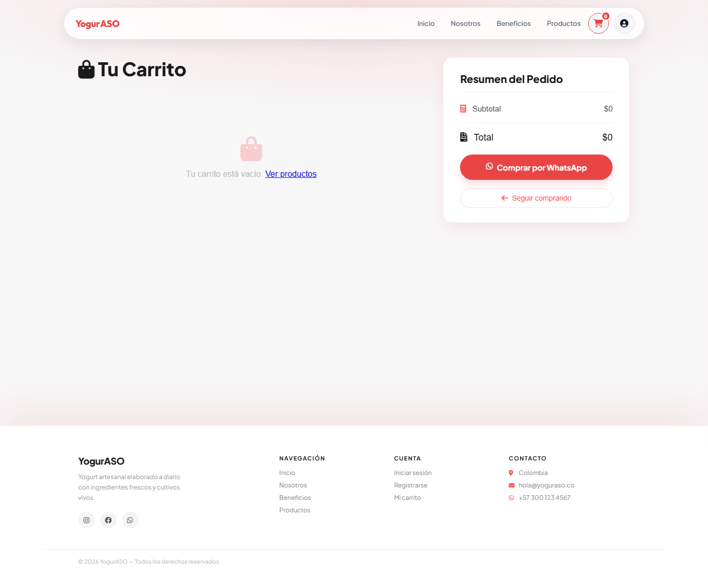
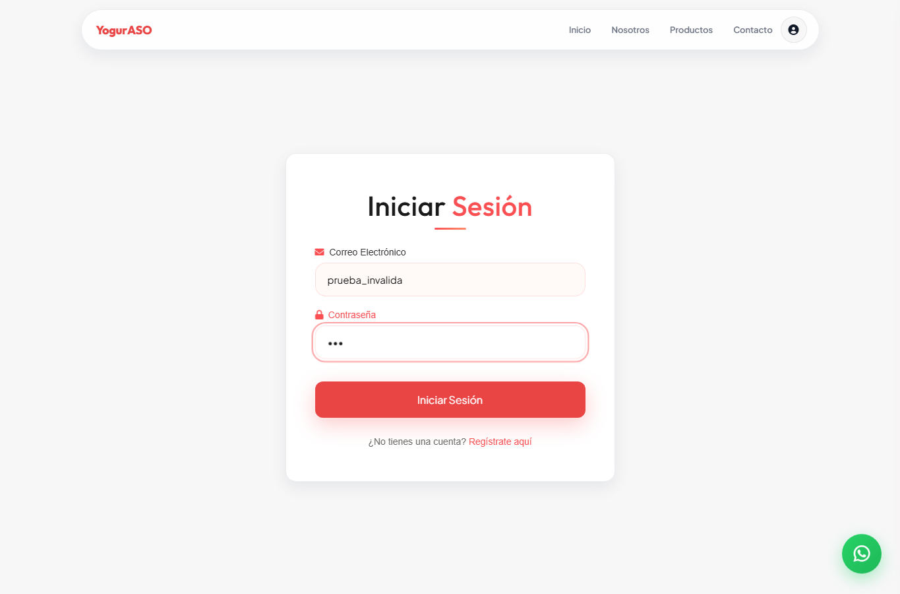
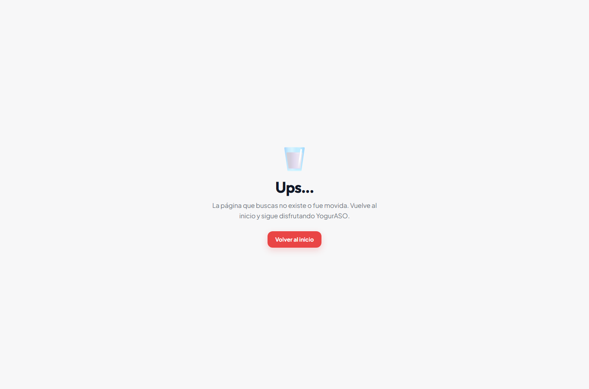

Reporte del plan de pruebas ejecutadas
Solución de software: YogurASO – Tienda web de yogurt artesanal
El presente documento corresponde a la evidencia de conocimiento GA9-220501096-AA3-EV02 y presenta el reporte consolidado de las pruebas ejecutadas sobre la solución de software YogurASO. El objetivo de este reporte es dejar trazabilidad del comportamiento del sistema después de aplicar el plan de pruebas, de modo que se puedan identificar desviaciones frente a lo esperado y orientar acciones correctivas cuando sea necesario.
YogurASO es una tienda web de yogurt artesanal. El frontend se encuentra en la carpeta frontend/ (páginas HTML, estilos CSS y módulos JavaScript). El backend se encuentra en backend/ (Express, rutas, controladores y middlewares) y utiliza PostgreSQL según el esquema definido en database/schema.sql. Las funcionalidades principales evaluadas fueron: autenticación con JWT, catálogo de productos, autorización de administrador, carrito local, panel admin y renderizado de las vistas del cliente.
Este reporte se elaboró consultando el componente formativo “Las pruebas de software” y se articula con el plan de pruebas y los casos diseñados en evidencias previas (AA1-EV02 y AA2-EV01). A continuación se describe el ambiente, la metodología de ejecución con Postman y Playwright, el detalle de resultados, las evidencias, los hallazgos y las conclusiones.
Se ejecutaron pruebas sobre los siguientes componentes del proyecto:
Quedó fuera del alcance inmediato de esta corrida: pruebas de carga masiva (JMeter/LoadRunner), pruebas nativas en dispositivos móviles y una batería unitaria completa con Jest en integración continua. Esas actividades se proponen como mejora.
Las pruebas se ejecutaron en un entorno local de desarrollo, con las siguientes condiciones:
| Elemento | Descripción |
|---|---|
| Tipo de aplicación | Aplicación web (frontend estático + API REST) |
| Sistema operativo | Windows 10 / Windows 11 |
| Backend | Node.js + Express en http://localhost:3000 |
| Base de datos | PostgreSQL local, esquema database/schema.sql |
| Frontend | Servidor estático local (Live Server o puerto 5505) |
| Navegador automatizado | Chromium (Playwright) |
| Herramienta API | Postman |
| Herramienta UI/E2E | Playwright Test |
| Variables de entorno | backend/.env (JWT_SECRET, DB_HOST, DB_USER, DB_PASSWORD, DB_NAME, DB_PORT) |
Antes de ejecutar las pruebas se verificó que PostgreSQL estuviera activo, que el backend iniciara sin error (npm run dev en backend/) y que el endpoint de salud respondiera correctamente. El frontend se sirvió de forma independiente, tal como está diseñado el proyecto.
La ejecución siguió la lógica de la pirámide de pruebas aplicada al MVP: primero pruebas de humo e integración de API, luego pruebas funcionales de autenticación y productos, y finalmente pruebas de interfaz sobre las páginas del frontend. Cada caso se contrastó con la salida esperada definida en el diseño de casos (AA2-EV01).
Postman se utilizó para validar el comportamiento del backend de YogurASO a través de peticiones HTTP. Se creó (o se utilizó) una colección denominada YogurASO API con variable de entorno/colección baseUrl = http://localhost:3000/api. El procedimiento general fue el siguiente:
En cada request se registró: método HTTP, URL, código de estado, cuerpo de respuesta y si el resultado coincidía con lo esperado. Esta información alimenta los casos 001 a 007 y el caso 012 del consolidado.
Criterio de aprobación en Postman: el código HTTP y el JSON deben cumplir la regla de negocio (éxito en operaciones válidas; 401/403 en operaciones no autorizadas; mensajes claros en validaciones).
Playwright se utilizó para automatizar la verificación de las pantallas del frontend en un navegador Chromium. Las pruebas comprobaron que las páginas cargan, que existen los elementos clave de formularios y navegación, y que la interfaz responde a interacciones básicas. El flujo ejecutado cubrió:
La automatización generó capturas de pantalla almacenadas en docs/taller-pruebas/evidencias/ y un resumen JSON (reporte_pruebas.json) con el estado PASS/FAIL de cada escenario. Adicionalmente, en el proyecto raíz se dispone de Playwright Test (npx playwright test) para reejecutar baterías de ejemplo o extendidas.
Criterio de aprobación en Playwright: la página debe renderizarse sin error de carga y deben encontrarse los selectores/elementos esperados (por ejemplo, campo de búsqueda del catálogo o inputs de login).
Se diseñaron y ejecutaron doce (12) casos según el formato de la evidencia. El consolidado fue:
| Indicador | Valor |
|---|---|
| Total de casos ejecutados | 12 |
| Aprobados | 12 |
| En seguimiento | 0 |
| Rechazados | 0 |
| Tasa de éxito | 100% |
| Escenarios Playwright UI (P1–P8) | 8 / 8 PASS |
La lectura de estos indicadores muestra estabilidad del MVP en el ambiente local documentado. No se presentaron defectos bloqueantes en la corrida consolidada; sí se registraron observaciones preventivas (sección 9).
Los siguientes casos corresponden a la capa API. Se explica para cada uno el propósito, la forma de ejecución y el resultado.
Tipo: prueba de humo / integración. Se ejecutó GET http://localhost:3000/api/health en Postman. El fin fue confirmar que Express responde y que PostgreSQL está conectada antes de continuar con el resto de la batería.
Salida esperada: HTTP 200 con success: true y database: "connected".
Salida obtenida: respuesta exitosa con base de datos conectada cuando el backend y PostgreSQL estaban activos.
Resultado: Aprobado. Evidencia: request Postman /api/health.
Tipo: prueba funcional. Se envió POST /api/auth/registro con cuerpo JSON válido. Se validó el flujo de authController.js (normalización de email, reglas de password y persistencia en tabla usuarios).
Salida esperada: creación exitosa o mensaje de validación claro; la contraseña no debe devolverse en claro.
Salida obtenida: el registro se procesó conforme a las reglas del controlador.
Resultado: Aprobado. Evidencia: respuesta Postman del endpoint de registro.
Tipo: prueba funcional. Con las credenciales del usuario de prueba se ejecutó POST /api/auth/login. El objetivo fue obtener el token JWT utilizado en los casos posteriores.
Salida esperada: success: true, token JWT y objeto usuario sin password.
Salida obtenida: login exitoso con token firmado (configuración JWT_SECRET / expiración definida en el backend).
Resultado: Aprobado. Evidencia: body de login en Postman (token capturado).
Tipo: prueba de integración (ruta + middleware). Se ejecutó GET /api/auth/perfil con cabecera Bearer y, como caso negativo, sin cabecera. Así se comprobó verificarToken en verifyToken.js.
Salida esperada: perfil del usuario con token válido; 401 “Token requerido” sin token.
Salida obtenida: comportamiento acorde al middleware de seguridad.
Resultado: Aprobado. Evidencia: comparación de ambos requests en Postman.
Tipo: prueba funcional de catálogo. Se ejecutó GET /api/products para verificar que productController.js retorna el listado desde PostgreSQL.
Salida esperada: listado JSON con atributos de producto (nombre, precio, stock, imagen, categoría, etc.).
Salida obtenida: respuesta de catálogo disponible para consumo del frontend.
Resultado: Aprobado. Evidencia: response Postman GET /products.
Tipo: prueba de autorización. Se intentó POST /api/products sin token y con token admin. El fin fue validar la cadena verificarToken + verificarAdmin en las rutas de productos.
Salida esperada: rechazo 401/403 sin privilegios; creación exitosa con admin.
Salida obtenida: las rutas sensibles quedaron protegidas según el diseño de seguridad.
Resultado: Aprobado. Evidencia: matriz de requests Postman (anónimo / admin).
Tipo: prueba funcional CRUD. Con un id de producto y token admin se ejecutaron PUT y DELETE /api/products/:id.
Salida esperada: actualización reflejada y eliminación/desactivación controlada.
Salida obtenida: operaciones coherentes con el controlador de productos.
Resultado: Aprobado. Evidencia: secuencia Postman crear → editar → eliminar.
Tipo: prueba de integración. Se verificó que frontend/js/config.js define API_URL hacia el backend y que frontend/js/api.js centraliza las llamadas (fetch) de productos, autenticación y carga de imágenes. Complementariamente se contrastó con los mismos endpoints probados en Postman.
Salida esperada: configuración única de URL; respuestas JSON coherentes; CORS permitido para orígenes locales.
Salida obtenida: el puente cliente-servidor está centralizado y alineado con la API.
Resultado: Aprobado. Evidencia: revisión de archivos + requests equivalentes en Postman.
Los casos 008 a 011 evalúan la experiencia de interfaz. La automatización reportó ocho escenarios PASS. A continuación se describe el alcance de cada caso de la evidencia y su relación con las capturas.
Se abrió frontend/index.html. Se esperaba visualizar la identidad YogurASO y una carga correcta de la home. Resultado: Aprobado. Evidencia: figura 1 (01_inicio_home.png). Detalle automatizado: título “YogurASO · Yogurt Artesanal”.
Se navegó a pages/productos.html y se verificó la presencia del buscador #catalog-search. Resultado: Aprobado. Evidencia: figura 2 (02_catalogo_productos.png).
Se verificaron login.html y registro.html, incluyendo la interacción de ingreso de datos de prueba en el formulario de login. Resultado: Aprobado. Evidencias: figuras 3, 4 y 7.
Se comprobó el renderizado de carrito.html y admin.html. Resultado: Aprobado. Evidencias: figuras 5 y 6. Adicionalmente se validó la página 404.html (figura 8) como control de ruta no encontrada.
| ID | Escenario | Detalle observado | Estado |
|---|---|---|---|
| P1 | Carga de página de inicio | Título: YogurASO · Yogurt Artesanal | PASS |
| P2 | Catálogo de productos | Campo #catalog-search presente | PASS |
| P3 | Formulario de login | Inputs de autenticación encontrados | PASS |
| P4 | Formulario de registro | Campo nombre presente | PASS |
| P5 | Vista de carrito | carrito.html renderizada | PASS |
| P6 | Panel administrador | admin.html renderizada | PASS |
| P7 | Interacción login | Datos de prueba ingresados | PASS |
| P8 | Página 404 | 404.html accesible | PASS |
| N° | Caso | Herramienta | Resultado | Seguimiento | Severidad |
|---|---|---|---|---|---|
| 001 | Salud API / BD | Postman | Aprobado | N/A | N/A |
| 002 | Registro usuario | Postman | Aprobado | N/A | N/A |
| 003 | Login JWT | Postman | Aprobado | N/A | N/A |
| 004 | Perfil autenticado | Postman | Aprobado | N/A | N/A |
| 005 | Listado productos | Postman | Aprobado | N/A | N/A |
| 006 | Alta producto admin | Postman | Aprobado | N/A | N/A |
| 007 | PUT/DELETE productos | Postman | Aprobado | N/A | N/A |
| 008 | Home UI | Playwright | Aprobado | N/A | N/A |
| 009 | Catálogo UI | Playwright | Aprobado | N/A | N/A |
| 010 | Login/Registro UI | Playwright | Aprobado | N/A | N/A |
| 011 | Carrito/Admin UI | Playwright | Aprobado | N/A | N/A |
| 012 | Integración api.js | Postman / Playwright | Aprobado | N/A | N/A |
Las siguientes figuras soportan la ejecución de las pruebas de interfaz. Cada imagen corresponde a un escenario automatizado sobre el frontend de YogurASO.







En la ejecución consolidada no hubo casos rechazados ni en seguimiento. No obstante, se documentan observaciones para fortalecer el proceso de calidad:
| ID | Observación | Severidad | Acción recomendada |
|---|---|---|---|
| OBS-01 | Las pruebas de API dependen de que PostgreSQL y el backend estén activos; sin ello /api/health falla. | Media | Aplicar checklist de arranque (BD → server.js → health) antes de cada batería Postman. |
| OBS-02 | Aún no existe una suite unitaria Jest integrada de forma permanente al flujo de trabajo. | Baja | Incorporar pruebas unitarias a cart.js y validaciones de auth; enlazarlas a npm test. |
| OBS-03 | La cobertura E2E se centró en render e interacción básica; falta un flujo completo de checkout WhatsApp. | Baja | Extender Playwright con escenario carrito → botón/CTA de WhatsApp. |
La trazabilidad se mantiene relacionando módulo del código, caso de prueba, herramienta, evidencia y resultado. Así, un cambio en authController.js exige reejecutar al menos los casos 002–004; un cambio en productController.js o productRoutes.js exige 005–007; cambios visuales en frontend/pages/ exigen 008–011; y cambios en api.js/config.js exigen el caso 012 y una verificación de health (001).
Este encadenamiento permite detectar regresiones con el mínimo esfuerzo: primero humo (001), luego API crítica y finalmente UI. De esa forma se cumple el principio de encontrar el mayor número de errores con la menor cantidad de tiempo posible, sin perder orden ni evidencia.
El reporte GA9-220501096-AA3-EV02 consolida la ejecución del plan de pruebas sobre YogurASO. Mediante Postman se verificó el comportamiento de la API REST (disponibilidad, autenticación JWT, catálogo y autorización de administrador). Mediante Playwright se verificó el comportamiento de las pantallas principales del frontend, con evidencia fotográfica de cada escenario.
Los doce casos ejecutados fueron aprobados, lo que indica que, en el ambiente local descrito, la solución cumple los comportamientos esperados del MVP. Las observaciones registradas no impiden la aceptación funcional de esta corrida, pero sí orientan mejoras de automatización unitaria, checklist operativo y extensión E2E.
En conclusión, el proceso de pruebas aportó trazabilidad, evidencia verificable y una base clara para acciones correctivas. Se recomienda conservar este PDF junto al formato Excel de casos (AA2-EV01) y a las capturas de docs/taller-pruebas/evidencias/ como expediente de calidad del proyecto YogurASO.
|
_________________________________ Firma del aprendiz / analista Nombre: _________________________ |
_________________________________ Firma de revisión (instructor) Nombre: _________________________ |